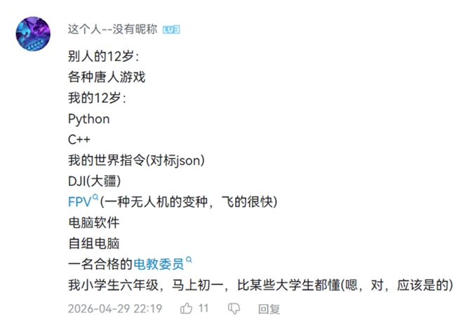
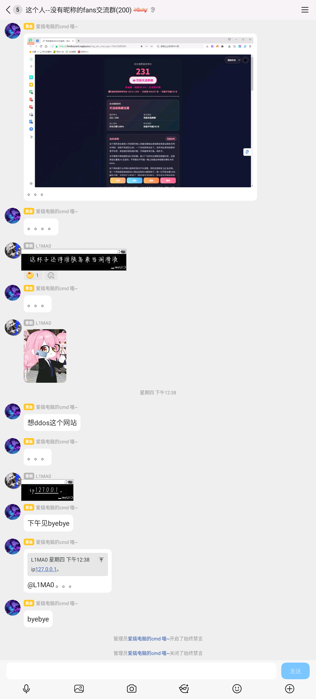
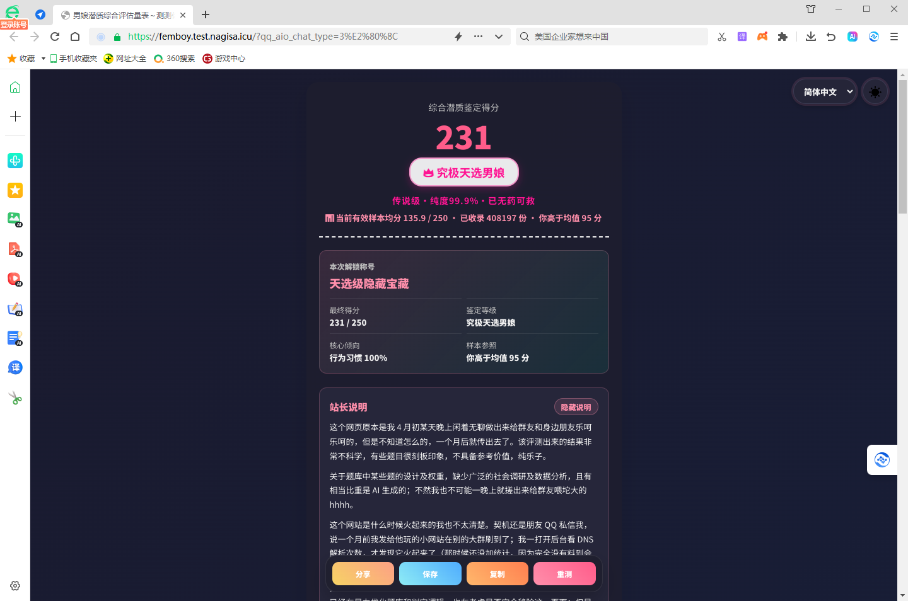
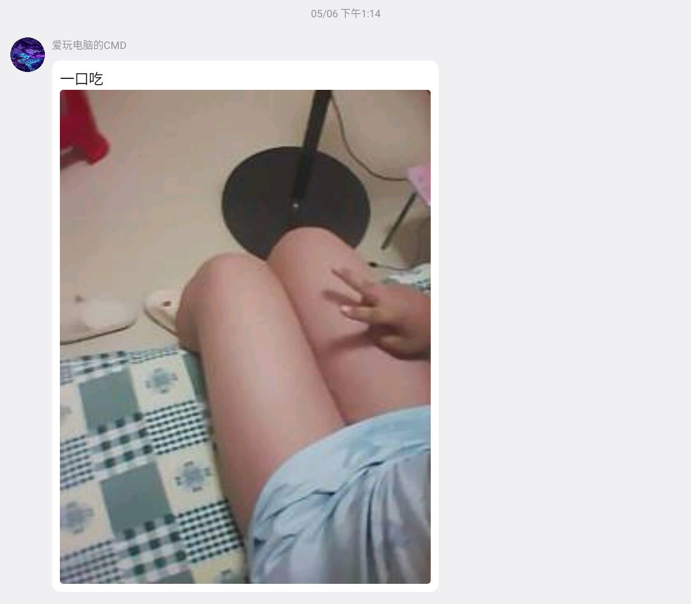

关于爱玩电脑的CMD
由于我突然觉得我似乎过于不合适重新修改了该帖子
首先本人认为就只是一个有虚荣心的小孩子,没必要跟小孩子太大计较
「爱玩电脑的CMD」纯嘉豪小学生，他声称自己的一个精通计算机的天才，但实际上是吹牛逼呢。并且他还四处惹事，做一些令人反感的事情。（包括但不限于无缘无故神权，装高冷，说自己很有学历，11岁被大学录取等）该引用资料来源http://cmd.kingpop.top
为什么这么说呢，因为：
1 | 别人的12岁😢： |
原图

懂吧
我的世界指令(对标json)😡
嘿你们知道吗,有时候憋笑真的很难欸
Bro 以为自己看了几个fpv视频就当自己是俄乌战场飞手💀
电脑是拿炸弹组的
这种公然挑衅、贬低的行为是完全不正确的，你可以承认自己优秀，但是觉对不能借此贬低他人，这样只会让你显得没有实力。
我们再来说说另一件事
关于装β却并没有做这件事/物
俗称嘉豪
对于我的观点来说他只是个小孩子，有点虚荣心挺正常，这个不必过多接触
在2026/5/14 此人发布测试自己是否为小男娘，在此之前发布了引人不适的图片及言论
[图片]点击展开


[图片]点击展开原消息

锐评:男娘普遍寿命对半
他的Bilibili: 点击访问
他的粉丝群(引用bilibili简介):我的世界，编程：python，c++ 这个人--没有昵称的fans交流群 1071581361，交流群2 956315000
友情链接 : http://cmd.kingpop.top
资料来源 : 段落1所用材料